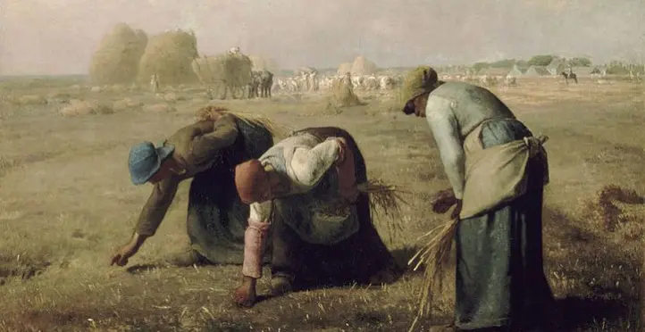

Qu’est ce que le naturalisme ?
Description
Le terme « naturalisme » a désigné au XIXe siècle, en peinture comme en littérature, un mouvement artistique en Occident, approximativement compris entre 1880 et 1900, faisant suite au réalisme pictural, qui avait mis très longtemps à convaincre critiques et publics.
Il en reprend partiellement les traits, en accordant, comme chez Gustave Courbet, une importance primordiale au motif, à la nature perçue telle quelle, au monde paysan, plutôt qu'à des scènes historiques, mythologiques ou religieuses figées par les canons académiques. Il prend position en faveur du peuple et du monde ouvrier, qui jusque-là échappaient à la représentation.
“Il prend position en faveur du peuple et du monde ouvrier”
Ce mouvement, marqué par le développement de la photographie, la médecine, les sciences exactes, l'histoire sociale, pratique, dans sa forme, soit à la manière académique, comme celle de Jean-Léon Gérôme, soit emprunte certains effets picturaux aux impressionnistes, dont elle hérite aussi.
Une part importante du mouvement naturaliste illustre la perspective darwinienne de la vie et la croyance en la futilité des efforts de l'Homme face à la puissance de la Nature.
Avez-vous bien compris ?
Si vous avez bien lu, vous savez maintenant reconnaitre une peinture naturaliste et plus généralement toutes les oeuvres de ce courant.
Voici un petit quizz pour vérifier vos connaissances. Vous avez ci-dessous des peintures. À vous de deviner si c'est une peinture naturaliste ou non. Pour connaitre la réponse, cliquez simplement sur la peinture.
Bien joué, c'est effectivement une peinture naturaliste.
Dommage ce n'était pas une peinture naturaliste, essaie encore.
Dommage ce n'était pas une peinture naturaliste, essaie encore.
Bien joué, c'est effectivement une peinture naturaliste.